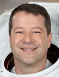

Lyndon B. Johnson Space Center
Houston, Texas 77058
|
National Aeronautics and Space Administration Lyndon B. Johnson Space Center Houston, Texas 77058 |
 |
Biographical Data |
||
Nicholas J. M. Patrick (Ph.D., P.E.)
NASA Astronaut
PERSONAL DATA: Dr. Patrick was born in 1964 in Saltburn-by-the-Sea, North Yorkshire, in the United Kingdom. He also considers London, England, and Rye, New York, to be his hometowns. He became a U.S. citizen in 1994. His mother, Gillian Patrick, lives in Connecticut; his father, Stewart Patrick, in California. He is married with three children. His recreational interests include flying, fixing and building things and reading to his children.
EDUCATION: Harrow School, London, England, 1978 to 1982
Bachelor of Arts in Engineering, University of Cambridge, England, 1986
Master of Arts in Engineering, University of Cambridge, England, 1990
Master of Science in Mechanical Engineering, Massachusetts Institute of Technology, 1990
Doctorate in Mechanical Engineering, Massachusetts Institute of Technology, 1996
ORGANIZATIONS: Dr. Patrick is a registered Professional Engineer (Mechanical) and is a member of the Aircraft Owners and Pilots Association.
SPECIAL HONORS: Honorary Doctorate from Teesside University, Middlesbrough, UK, 2011; JSC Center Director’s Discretionary Award for contributions to the user interface of the shuttle cockpit avionics upgrade, 2002; General Electric (GE) Aircraft Engines Development Program Project Award for contributions to inventory reduction, 1988; entrance scholarship (“Exhibition”) to the University of Cambridge, 1983. Dr. Patrick holds three patents in the areas of telerobotics, flight displays and integrated aircraft alerting systems.
EXPERIENCE: During his college years, Dr. Patrick spent his summers as a Civil Engineer, inspecting bridges in New York and Connecticut. After graduating from Cambridge, he moved to Boston, Massachusetts, where he worked as an Engineer for the Aircraft Engines Division of GE. He then attended the Massachusetts Institute of Technology (MIT), where he was a Research Assistant in the Human-Machine Systems Lab in the Department of Mechanical Engineering. His research interests included telerobotics, aviation psychology, decision theory and optimization. Upon completion of his Doctorate, Dr. Patrick joined Boeing’s Commercial Airplane Group in Seattle, Washington, where he worked in Flight Deck Engineering as a Systems and Human-Factors engineer on many of Boeing’s commercial aircraft models.
Dr. Patrick learned to fly as a member of the Royal Air Force’s Volunteer Reserve while attending Cambridge University. After moving to the United States, Dr. Patrick continued flying, becoming an instrument and multi-engine Flight Instructor. He has logged more than 2,300 hours as a pilot, in more than 20 types of airplanes and helicopters, and more than 800 hours as a Flight Instructor.
NASA EXPERIENCE: Dr. Patrick reported to the Johnson Space Center for astronaut training in 1998. When not in training for a spaceflight, Dr. Patrick worked in the Astronaut Office on the space shuttle cockpit avionics upgrade program, served as Capsule Communicator (CAPCOM) in mission control for STS-123 and STS-124, led the team that defined the human systems integration requirements for the Orion capsule, worked on the design of the Orion cockpit, and served as the Flight Crew Representative to the Orion program.
Dr. Patrick has logged 638 hours in space as a Mission Specialist on two International Space Station construction flights: STS-116 and STS-130. He logged more than 18 hours during three spacewalks on STS-130.
Dr. Patrick retired from NASA in June 2012.
SPACE FLIGHT EXPERIENCE: STS-116 Discovery (December 9 to December 22, 2006). The seven-member crew on this 12 day mission continued construction of the International Space Station outpost by adding the P5 truss segment and performing four spacewalks, one of which was added to allow the crew to coax and retract a stubborn solar panel to fold up like an accordion into its box. Discovery also delivered a new crew member and more than two tons of equipment and supplies to the station. Mission duration was 12 days, 20 hours and 45 minutes.
STS-130 Endeavour (February 8 to February 21, 2010) launched at night, carrying the International Space Station’s final permanent modules: Tranquility and Cupola. Tranquility (or Node 3) is now the life-support hub of the station, containing exercise, water recycling and environmental control systems, while the Cupola provides the largest set of windows ever to grace a spacecraft. These seven windows, arranged in a hemisphere, provide a spectacular and panoramic view of our planet and a direct view of station robotic operations. During the 13-day, 18-hour mission, Endeavour and her six-member crew traveled more than 5.7 million miles and completed 217 orbits of the Earth, touching down at night at Kennedy Space Center, Florida.
JUNE 2012
This is the only version available from NASA. Updates must be sought from the above named individual.